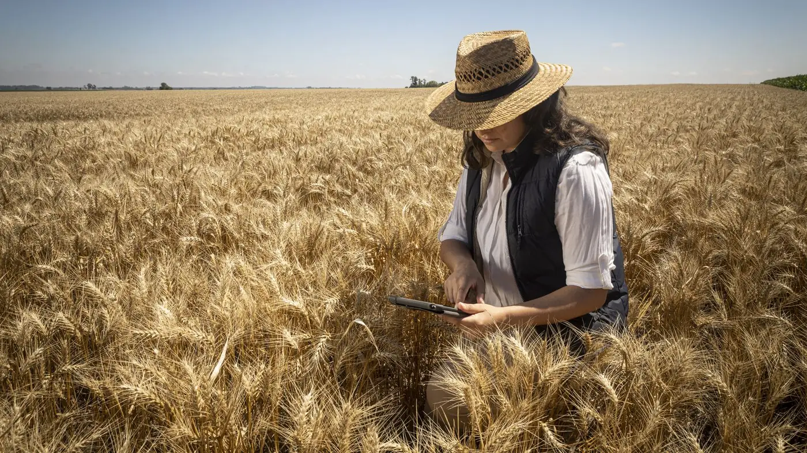
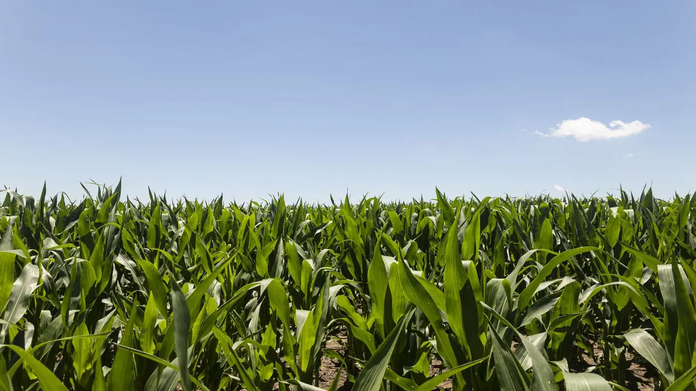
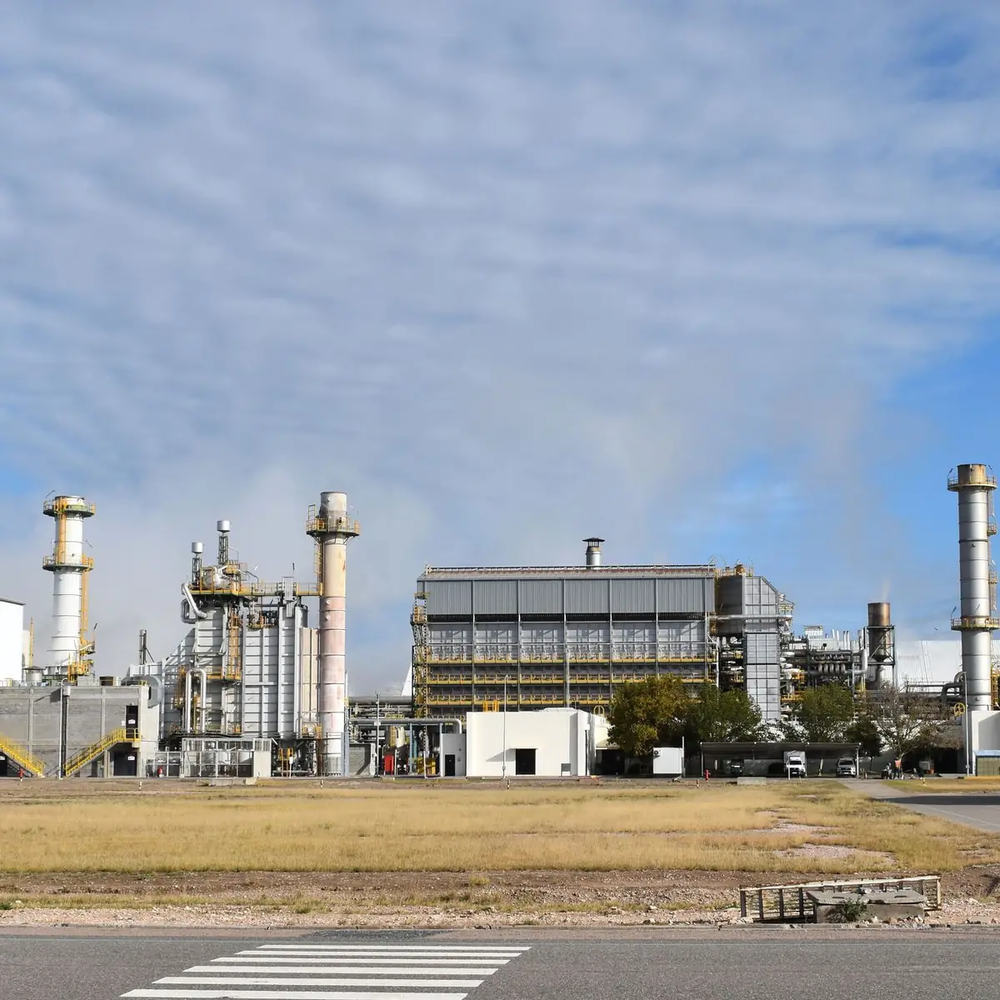
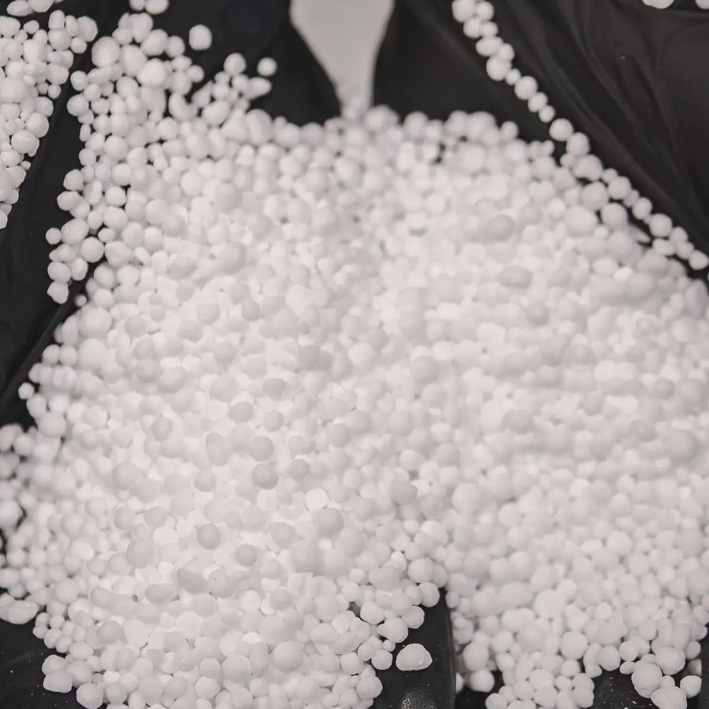
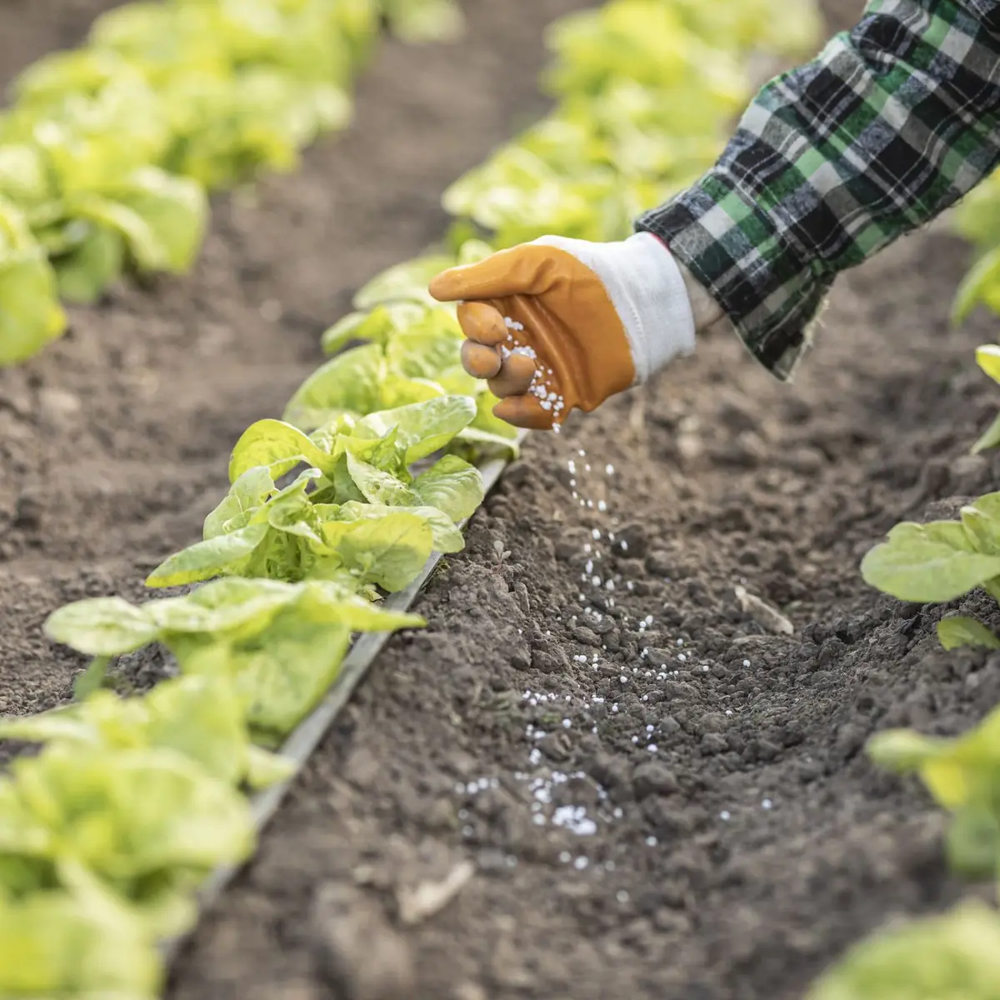

Carrusel de fotos
Pasá el mouse por las fotos y arrastrá, o usá las flechas del teclado. Gira en loop. Las fotos son de demo: se reemplazan por las del board.
Usá las flechas izquierda y derecha del teclado para recorrer las fotos.




